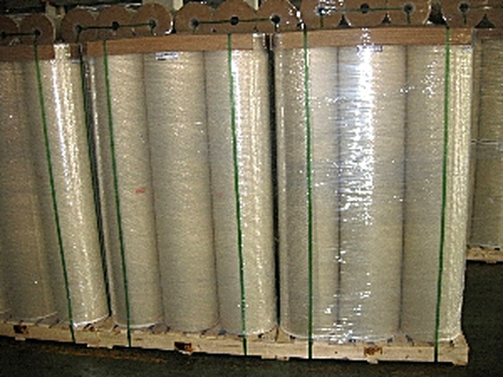

BOPP Tape Garade Film Clear Jumbo Rolls
BOPP tape grade film clear jumbo roll This goods is used for manufacturing BOPP adhesive packing tape ( jumbo roll size ). Also for high quality tape uses . Specifications: 1) Length:…
Product highlights
- Consistent thickness across the web for uninterrupted converting
- Excellent heat-seal strength and broad sealing window
- High optical clarity with low haze for premium shelf appeal
- Stable corona treatment for reliable printing and lamination
Typical applications
- Flexible packaging
- Labels & wrap-around labels
- Food and snack bags
- Shrink and overwrap film
- Book and magazine covers
Technical specifications
Key parameters taken from our production data sheet.
Overview
| Thickness | 23,25,28 microns and others |
|---|---|
| Width | 500mm,520mm,980mm,1000mm, 1040mm, 1020mm, 1280mm, 1310mm,1630mm,2010mm etc. |
| Length | 4,000m |
| Color | Transparence |
| Packing | Using carton with pallets or as per customers' requirements 6 ) used to adhere water based acrylic liquid and manufactured as Bopp packing tape. BOPP function click(e) { if (document.all) { if (event.button==2||event.button==3) { oncontextmenu='; } } if (document.layers) { if (e.which == 3) {… |
Product characteristics
| Basic material | Polypropylene (PP) |
|---|---|
| Coating | Water-based coating |
| Application | Flexible packaging; Labels & wrap-around labels; Food and snack bags |
Related products
More references in the same product family.
 BOPP Film
BOPP Film
Plain BOPP Film (Bi-axially Oriented Polypropylene) FOR Printing AND Lamination
Plain BOPP Film (Bi-axially Oriented PolyPropylene) For Printing And Lamination BOPP film is widely used for plain, lamination, matte and metalized films which are used for many different…
 BOPP Film
BOPP Film
BOPP Tape-grade Film
BOPP tape grade film clear jumbo roll This goods is used for manufacturing BOPP adhesive packing tape ( jumbo roll size ). Also for high quality tape uses . Specifications: 1) Length:…
 BOPP Film
BOPP Film
BOPP Flower Wrapping Film Mini-rolls
BOPP flower wrapping film (roll/cut sheet) 1. Smaller roll size (mini roll size) Thickness : 18UM, 25UM ,30UM,35UM,40UM Color : Super clear ( transparent ), colored or printed customer's…
 BOPP Film
BOPP Film
BOPP Thermal Laminating Film
BOPP Thermal Film ( glossy / matte ) BOPP Thermal Lamination Film ( glossy / matte ) which is BOPP clear film coated with EVA . Spec. : 1.) Jumbo roll sizes : Total Thickness :22-33UM…
Request samples or a quotation
Tell us the grade, thickness and quantity you need and our team will reply with a specification and lead time.